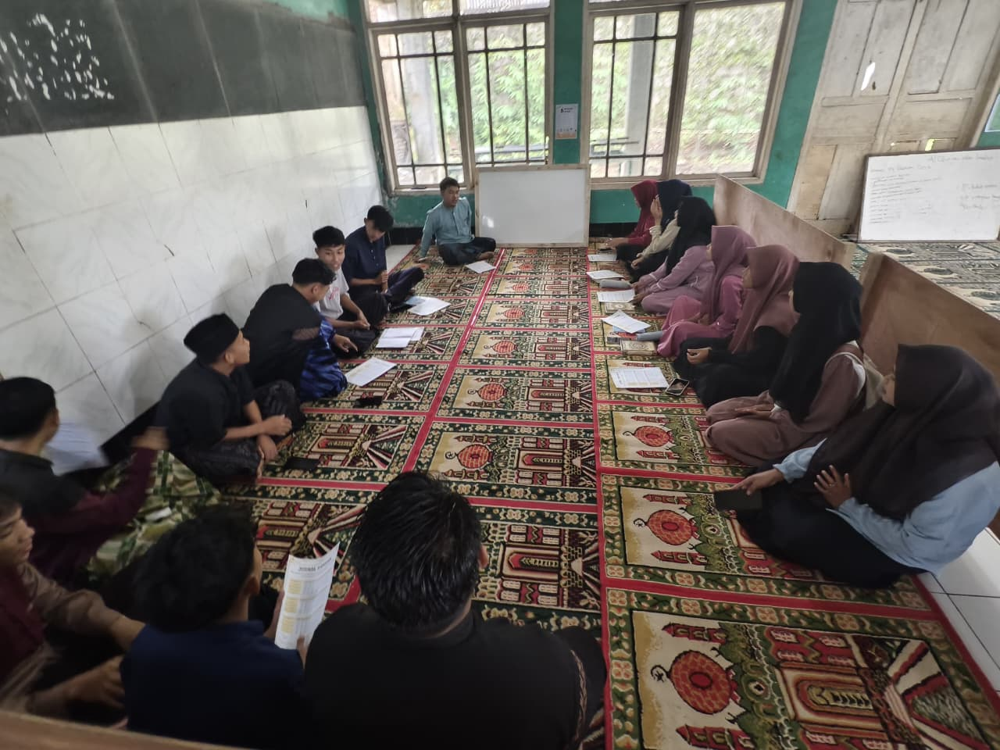
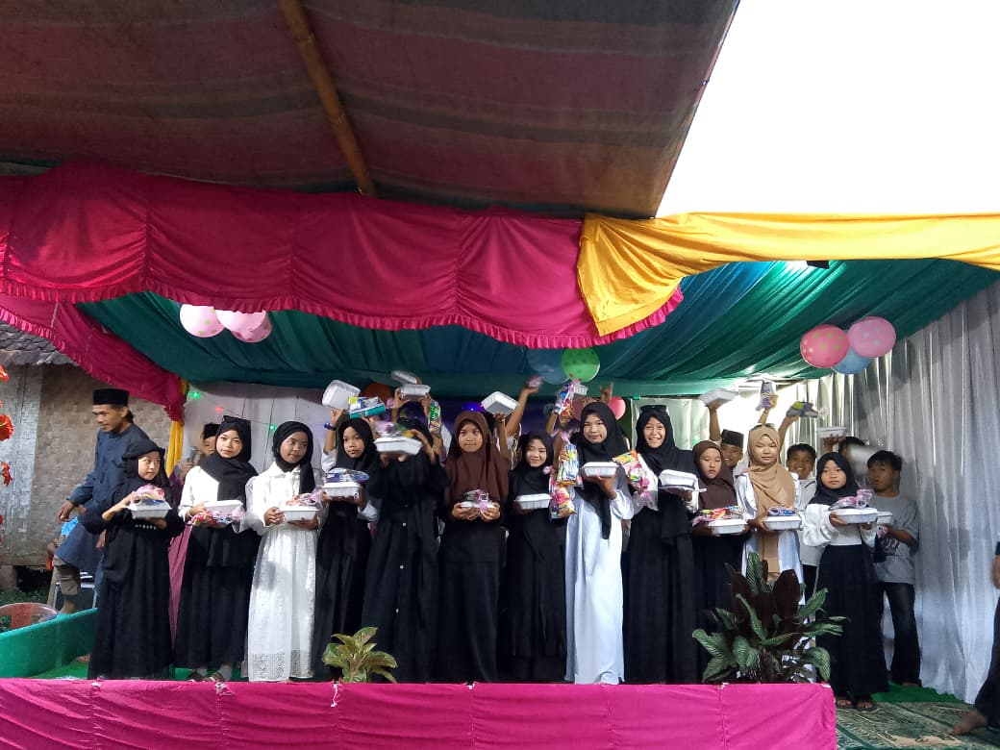
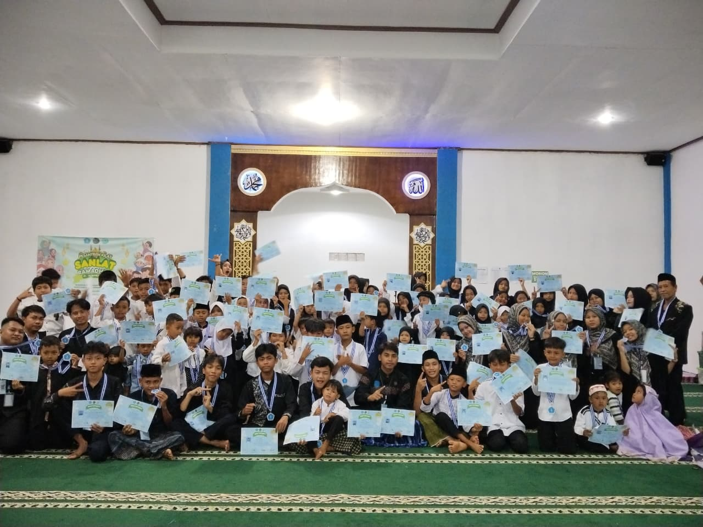
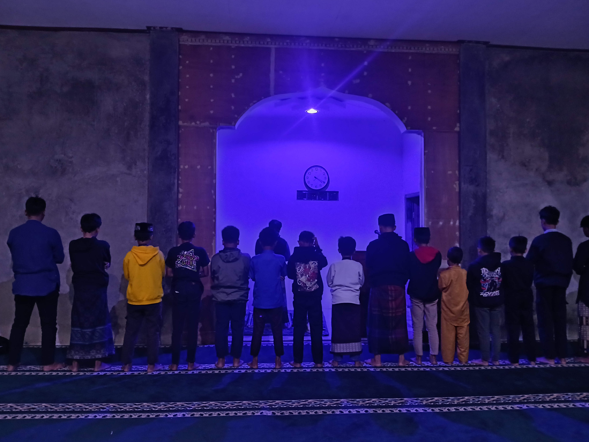
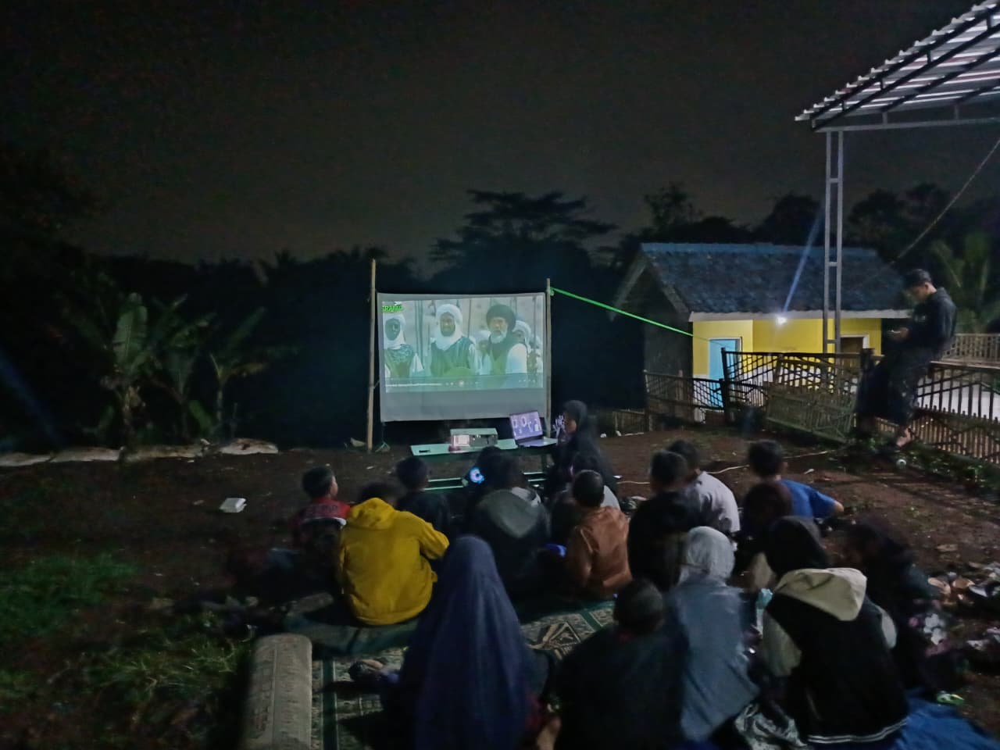
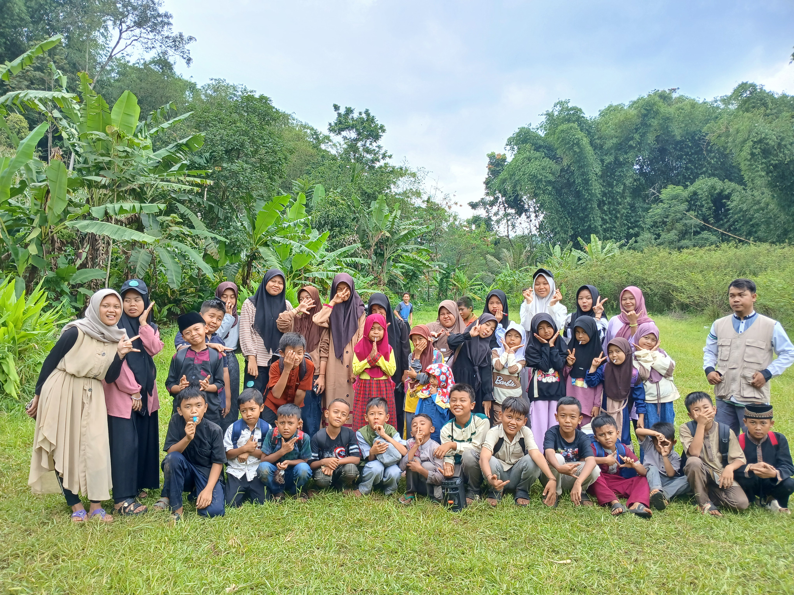
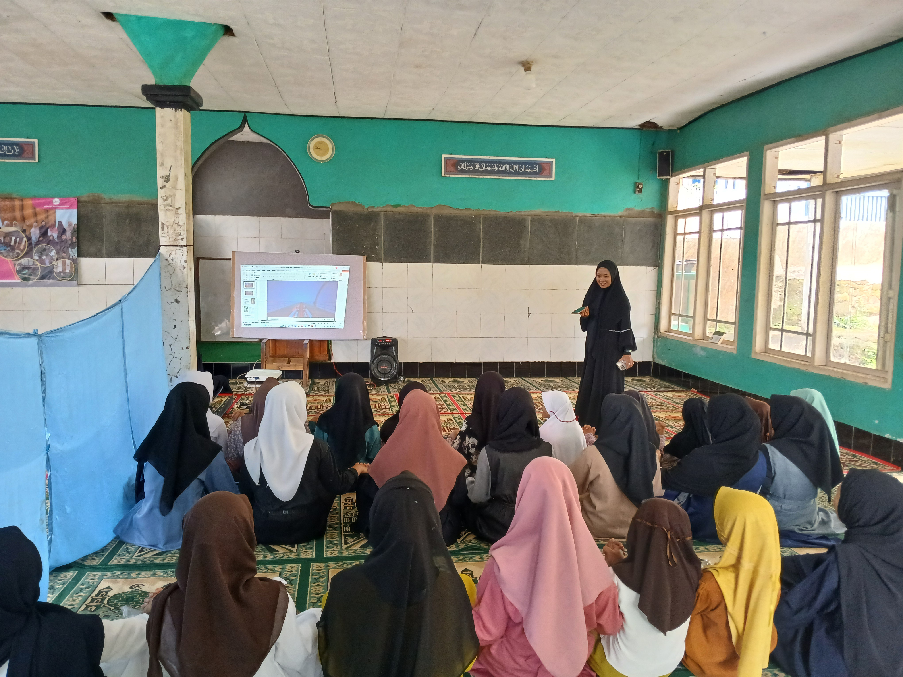

Sekilas kegiatan belajar-mengajar dan acara di MDTU Al-Barokah.

Kegiatan Belajar Mengajar Peringatan Isra Mi'raj
Peringatan Isra Mi'raj

Peringatan Maulid Nabi
Pesantren Ramadhan
Malam Bina Iman dan Taqwa (MABIT)
Nonton Bareng (Nobar) Islami
Rihlah Ilmiah
Kajian IslamiDokumentasi berbagai kegiatan MDTU Al-Barokah yang telah dilaksanakan dalam beberapa tahun terakhir, sebagai bagian dari perjalanan belajar, ibadah, dan kebersamaan santri.